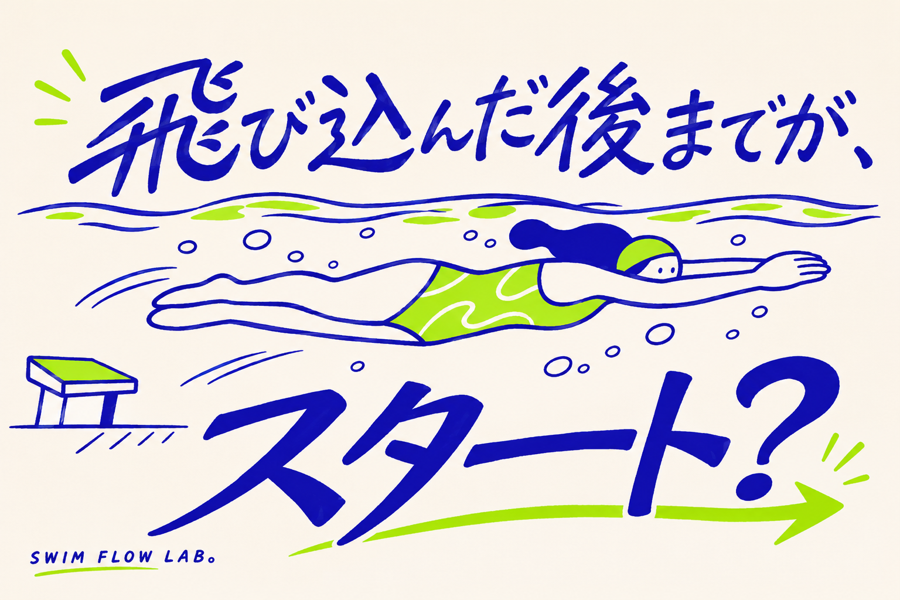

SWIMMING RESEARCH / 26
飛び込んだ後までが、スタート？
水しぶきの先にある、動きのつながりを見る
2026年11月16日 公開

「今の飛び込み、遠くまで飛べたね」。プールサイドから見ると、空中にいる姿や大きな水しぶきが目に残ります。でも、その瞬間だけで、よいスタートだったと決めてよいのでしょうか。
飛び込みは、空中で終わる競技ではありません。水に入り、水中を進み、水面の泳ぎへつながっていく。今日は、その続きまで目を向けます。飛び込みのやり方を独学する記事ではなく、指導者と映像を振り返るときの「見る場所」を増やす記事です。
水に入ったところは、まだ途中
運動会のリレーを思い浮かべてください。バトンを勢いよく渡しても、次の走者が受け取れずに止まれば、その勢いは次へつながりません。水泳のスタートも、目立つ一場面だけでなく、前の動きが次の動きにどうつながったかを見たいところです。これは理解のためのたとえで、リレーと水泳が同じ仕組みだという意味ではありません。
台から、水面の泳ぎまで
- 1台・空中
合図から台を離れ、水へ向かう
- 2入水・水中
水に入ってからも移動は続く
- 3浮上・泳ぎ
水面の泳ぎへつなげる
台・空中、入水後の水中移動、浮上後の泳ぎを順に示す。
スタートの研究では、台の上、空中、水中という区間に分けて調べます。さらに水中では、入った後の移動、キック、水面へ出て泳ぎ始める場面などを見ます。Vantorreらのレビューは、これらの切り替えも含めてスタートを整理しています。
図の矢印は「次に見る場面」の順番です。飛ぶ方向や角度のお手本ではありません。入水のあとに映像を止めず、浮上して泳ぎ始めるところまで見てみると、これまで気づかなかったつながりを探せます。
「15mまで」は、どこまで時計を動かすかの約束
「スタートのタイム」と聞いても、いつから、どこまでの時間なのかが分からないと比較できません。家から学校までの時間と、家から校門手前までの時間を比べたら、短いほうが有利になります。泳ぎでも、時計を止める場所をそろえる必要があります。
時計の始まりと終わりをそろえる
- 始まり
- スタートの合図
- 途中
- 入水・水中・浮上を含む
- 終わり
- 決めた15m地点への到達
スタートの合図から15m到達までが計測区間。水中移動の後は15mより手前で浮上する模式例で、潜水距離を指示しない。
競泳のスタート分析では、スタートの合図から15m地点までの時間が、よく使われます。15mとはプールの長さ全部ではなく、スタート側の壁から測った位置です。図では、台を離れる前から、水中を進む時間、水面で泳ぐ時間までが、同じ時計の中に入っています。研究や撮影ごとに、通過を何で判定するかも確認します。
大切なのは、15mはここでは測定の区切りであり、「そこまで潜ろう」という練習目標ではないことです。浮上する場所を図の位置へ合わせる必要もありません。自分が安全に行える練習と、研究が時間を区切る場所は、分けて考えます。
記録を見るときは「合図から測った？」「同じ地点で止めた？」を先に確かめましょう。数字の小ささより、比べる土台がそろっていることが大切です。
空中の見栄えだけでは、全体は分からない
Torらは、エリート選手による自由形とバタフライの52回のスタートを分析しました。「52人」ではなく、観察したスタートの回数です。空中だけでなく、水中での進み方に関する項目とスタート成績との関係も調べています。原著を、ここでは測った項目に注目して読みます。
見えた場面と、まだ見ていない場面
水しぶきの手前で観察が終わる
入水後から泳ぎ始めまで追う
空中だけで観察を終える場合と、入水後の泳ぎ出しまでを見る場合の、観察範囲の違い。
空中までの項目では、台を離れるときの「前向きの速さ」がスタート成績と関係しました。水中の項目では、水に入ってから最も深い位置へ進む時間、そこから水面へ戻る時間、10m地点までの時間を組み合わせたモデルが、15mまでのタイムの違いを説明しました。空中の高さや水しぶきの大きさだけを見た研究ではないのです。
「下がる時間」と「上がる時間」は、同じ水中の時間でも違う部分です。鉛筆で水面を一本描き、その下を通って水面へ戻る道をなぞると、行きと帰りがあることが分かります。ただし、どちらかを短くする練習をすれば必ず速くなる、という実験結果ではありません。研究が見つけたのは、全体の成績を考えるときに見落とせない測定項目です。
三つの時間を、混ぜない
- 下がる時間
- 入水してから最も深い位置まで
- 上がる時間
- 最も深い位置から水面へ戻るまで
- 10mまでの時間
- スタートの合図から10m到達まで
入水から最深位置までと、最深位置から水面までを分ける。合図から10mまでの時間は別の測定区間。
ただし、これは「ある動きを変える練習をさせ、その効果を確かめた」という研究ではありません。よい成績と一緒に見られた特徴が、そのまま誰にでも効く改善方法になるわけではないのです。エリート選手の特徴を、飛び込みを習い始めた子にそのまま当てはめることもできません。
また、全体の時間には水中の時間も含まれています。小さな区間と全体の数字は、もともと重なっている部分があります。関係が見つかったことだけで「水中のこの動きが原因だ」とは決められません。
たとえば、映像に深く潜った選手が写っていたとしても、それだけで「深いほど速い」とは言えません。水面へ戻るまでの動きもあります。遠くへ飛ぶことも、長く水中にいることも、一つだけを最大にすれば全体がよくなる、という話ではありません。
研究から持ち帰りたいのは特定の形の丸暗記より、空中と水中を切り離さずに見る視点です。「入水はよく見えた。その続きはどうだった？」と、もう一つ問いを足してみます。
次の一回は、直すより先に「つなぎ目」を見る
次に指導者と振り返るなら、最初から「全部直そう」としなくて大丈夫です。許可を得て撮影した既存の映像があれば、入水から泳ぎ始めまでを一緒に見ます。映像がなければ、指導者に「水に入った後は、どう見えましたか」と聞くところから始められます。
指さす → 聞く → 一つ決める
- 1指さす
どこで泳ぎ始めたか確認する
- 2聞く
指導者と前後の動きを見る
- 3一つ決める
次に観察する場面を選ぶ
入水後と泳ぎ始めの映像を対応させ、つなぎ目の前後を観察する。
見たいのは、たとえば「水中の移動から泳ぎ始めへ、どの場面で切り替わったか」。最初に場面を指さし、次に指導者の説明を聞きます。速い・遅いという判定だけより、「ここから泳ぎ始めた」と場所や順序で話せるほうが、次に確かめることがはっきりします。
比べるなら同じ泳法、同じ開始・終了の決め方にそろえます。違う条件の動画を並べたまま、わずかなタイム差の原因を一つに決めないようにします。比較する条件を整えるのも、泳ぎを理解する練習の一部です。
飛び込みは、施設の許可と指導者の監督がある環境で扱います。この図を見て自分だけで角度や深さを変えたり、長く潜る競争をしたりしません。今日の記事を読んだ直後にできることは、新しい飛び込みを試すことより、指導者に一つ質問を持っていくことです。
研究から分かったこと
- 研究の目的
- スタートのどの部分を見ればよいかを考える。
- 何を比べたか
- 台・空中だけでなく、水中と浮上後も同じ区間の中で見る。
- 何が分かったか
- エリート選手の分析では、水中の項目もスタート成績と関連した。
- この記事の答え
- 目立つ入水の一瞬だけでは、スタート全体を判断できない。
スタートの終わりは、着水の音ではありません。水に入った後の移動、浮上、泳ぎ出しまでが15mの記録に含まれます。大きな水しぶきに目を奪われた映像も、その先まで見ると別の情報が見えてきます。
参考文献と確認範囲
- Tor E, Pease DL, Ball KA. 2015. Key parameters of the swimming start and their relationship to start performance.
抄録と原著本文コピーの方法・測定項目を確認。52試技の観察分析。詳細な数値の推奨には使っていない。
- Vantorre J, Chollet D, Seifert L. 2014. Biomechanical Analysis of the Swim-Start: A Review.
本文の区間定義・スタート分析の節を確認。技術研究を整理したレビュー。